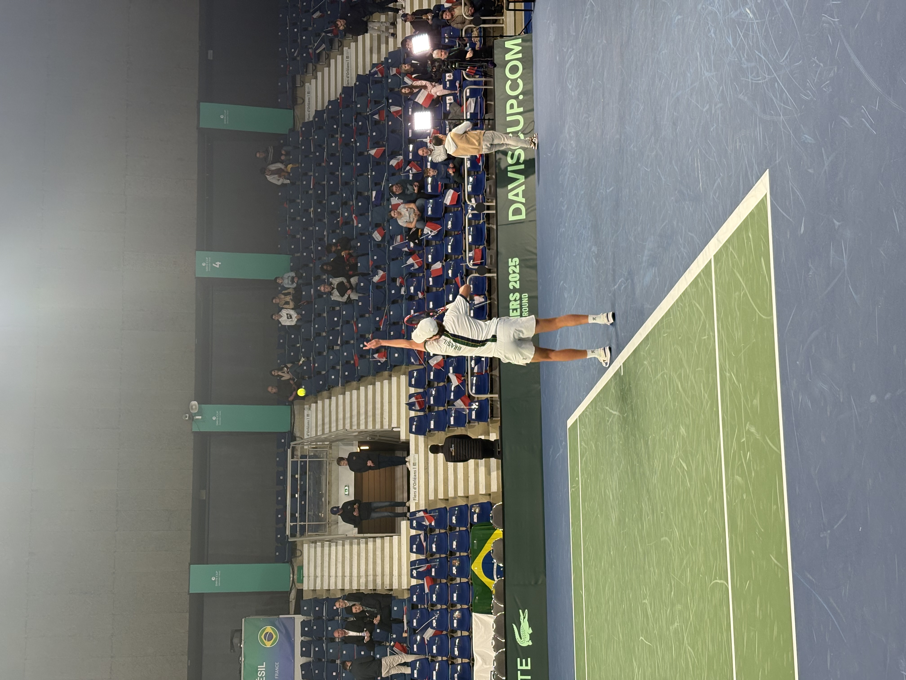
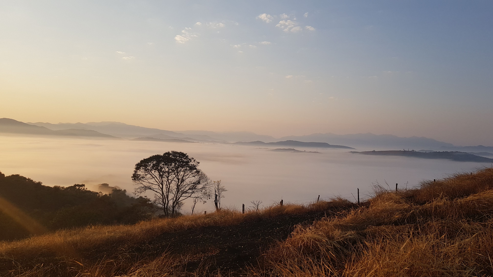

Curriculum Vitae
M.Sc. Electrical Engineering
Advisors: Mohamed Kadhem Karray (Orange), Shanshan Wang (Télécom Paris)
Thesis: "Prediction of QoS Metrics in Wireless Networks With Physics-Informed Machine Learning"
M.Eng. Electrical and Optical Engineering
Advisors: Nel Samama, Thierry Taillandier-Loize
Final Project: "Indoor Positioning System Using Ultra-Wideband (UWB) Signals"
B.Sc. Electrical Engineering
Advisor: José Cândido Silveira Santos Filho
Winter Research Intern
Chaire C2M, Laboratoire Traitement et Communication de l'Information (LTCI)
Research Intern
Software and Radio Architecture (SRA) team
Summer Research Intern
Hyperfrequency Lab, Electronics and Physics Department (EPh)
EA616: Linear Systems Analysis
Laplace/Z transforms, frequency response, state equations, controllability and stability
BRAFITEC Scholarship
2nd Place Prize
Team Unicamp & Team Brazil
Silver Honour
Updates
- Gave a short talk on AI architectures for user EMF transmission assessment at CNAM in Paris, France.
- I've completed my Master's at IP Paris with High Honours (Mention Bien)! Super proud of the work done.
- Presented our most recent paper at URSI France "Journées Scientifiques 2026" in Palaiseau, France.
- New paper available: "Deep Learning-Based Uplink Transmit Power Estimation in 4G/5G Networks".
- I have begun my final-year internship at Orange Research in Châtillon, France.
- Thrilled to have started my Master's at Institut Polytechnique de Paris!
- I received the BRAFITEC scholarship from CAPES for my studies in France. Honoured to be recognised!
Publications
-
Hybrid Models for Predicting Cellular QoS Using Physics-Informed Machine Learning: From Simulations to Field MeasurementsSubmitted in October 2026TL;DR Models that can predict relevant QoS KPIs in simulated and operational networks without needing direct field measurements, using only traffic and locations as input.
-
Deep Learning-Based Uplink Transmit Power Estimation in 4G/5G NetworksJournées Scientifiques d'URSI France, 2026TL;DR A method to estimate the uplink power from a UE at any point in an urban area using data from the surrounding BSs.
Others
Here is a collection of miscellaneous things that I like!
⚛︎ International Physicists' Tournament (IPT)
▸I was a member of Team Unicamp and Team Brazil from 2021 to 2023, and still watch the tournament every year.
The IPT is the largest annual competition in experimental physics for undergraduate and graduate students in the world. Every year, teams of six students work on solutions to 17 open problems proposed by the organisation, which can range from simple experiments to complex new phenomena. The best teams from each university compete in the regionals, and the winners represent their country on the international stage, at the famous 'physics fights'.
Each 'physics fight' includes three teams at a time, for the roles of reporting, opposition and moderation. The reporter has 10 minutes to present its complete solution to the selected problem: formulation, theory, experiments, validation and conclusions. The role of the opposition is then to ask questions about the solution and point out its strengths and weaknesses. Once both teams have presented, they begin to debate the most relevant points, while being moderated by a third team, which should lead them to debate important topics and answer the problem statement.
Get to know more about the tournament here:
🎾︎ Tennis
▸I've been an avid tennis player since I was 12. I grew up on clay!
Here are some photos from nice tennis moments I have experienced over the years. My ultimate goal as a fan is to attend all 4 Grand Slams.


My favourite player was Dominic Thiem. To this day, I play with a one-handed backhand and argue many more players should still adopt it.
🏠︎ Brazil
▸I'm Brazilian and very proudly so. I like to talk about my country whenever I have the chance.
I grew up in the state of Minas Gerais, known for its rich architecture, cuisine, and friendly people. We are particularly recognised for our traditional pão de queijo, our coffee, and our cheese — canastra is my favourite!
The music from Minas is also a gentle reminder of home that I listen to daily. I'm personally fond of Milton Nascimento and Lagum. Other national favourites of mine include Emicida, Rashid and Rita Lee.
